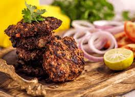

Chapli Kabab

Description
Chapli kebab is a form of kebabs widely popular in Pakistan. Mixed together with a South Asian blend of spices, the beef is flattened into circles and shallow-fried. The patty must have a charred exterior for an authentic look and flavor! Serve in a bun with pickled red onions or with a side of pita bread. Add my traditional raita (yogurt dip) to your beautiful platter!
Ingredients
Whole Spices
- 1½ tablespoon dried pomegranate arils,
- 2 tablespoon red chilli flakes
- 1 tablespoon cumin seeds
- 1½ tablespoon coriander seeds
- ½ tablespoon fennel seeds
Ground Spices
- ½ tablespoon Kashmiri chilli powder
- 1 teaspoon ginger powder
- 1 teaspoon black salt
- ½ teaspoon gram masala powder
- ½ teaspoon turmeric powder
For Kabab
- ½ kg ground meat
- 1 cup chopped onion
- 1 cup cornmeal
- 2 tablespoon ginger garlic paste
- 2 tablespoon chopped fresh coriander
- 2 tablespoon chopped green chilli
- 2 tablespoon butter
- ¾ cup chopped tomato
- Ghee
Instructions
For Spice Mix
- Roast cumin, coriander, dried pomegranate aril and fennel seed in a pan for 1 minutes until fragrant. Remove from heat.
- Immediately, add ground spices in the hot pan and stir for few second. Transfer spices to a food processor and crushed them lightly to get a coarse powder. Set aside.
For chapli kabab
- In large bowl take mince, spice mix, green chillies, ginger, garlic, onions, fresh corriander and butter, mix well. Marinate for 30 minutes.(Preferably 4-6 hours.)
- Just before frying, add tomato, egg and cormeal. Mix well until mince gets a dough like consistency.
- Roll out balls of kabab and flatten with hands.
- hallow fry kabab in clarified butter or tallow for 2-3 minutes on medium flame until crispy and lighty charred.
Nutrition
Serving: 1kabab ,Sodium: 584mg ,Calcium: 33mg ,Vitamin C: 4mg ,Vitamin A: 574IU ,Sugar: 36g ,Fiber: 4g ,Potassium: 179mg ,Cholesterol: 1mg ,Calories: 239kcal ,Monounsaturated Fat: 1g ,Polyunsaturated Fat: 1g ,Saturated Fat: 1g ,Fat: 2g ,Protein: 4g ,Carbohydrates: 54g ,Iron: 2mg